文章开头先问大家一个小问题，下图代表的是什么意思？
应该有不少人在路上见过这个标志，考驾照或经常开车的朋友应该更熟悉，这其实是单行道的标志，代表这条路上的汽车只能往箭头所指的方向开。
让我们再来看一个例子，请问下图是人体的哪个部位？它又有什么功能呢？
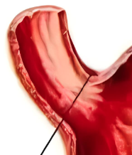
这个的话可能只有医学生比较熟悉了，这个部位叫贲（bēn）门，是食道和胃的连接处，贲门的肌肉可以收缩，有效地防止胃消化时胃液反流到食管。
最后再问一个问题：上面两个事物有什么共同特征呢？
相信大家很容易就能看出来，那就是单向性，这也是我们今天的主角——二极管的重要特征。
公路上如果不标明好方向，很容易发生交通事故；贲门的肌肉如果不能收缩，反流的胃酸不仅会腐蚀食道，还会让我们的嘴里充满恶心的味道；同样的，电路要想实现复杂的功能，也必须引入这种方向性的秩序，第一个挑起这个大梁的元器件就是二极管。虽然二极管单向导通的特性看起来很简单，但随着历史的发展，人们将这种特性应用到了极致，实现了各种各样的功能。下面我们来看看二极管的几种主流用法（下面的二极管默认为硅二极管，导通电压约为0.7V）：
1.整流
这是最容易想到的用法，四个二极管组成的桥式整流器可以将交流电转化为脉动直流电（脉动直流电的电压大小在变化，但方向没变，所以依然归为直流电）：
这里解释一下，输入整流桥的是峰值为10V的正弦交流电，为了方便观察整流的原理，我将输入的正弦波分解为了正半周和负半周。正半周期间，电流分别经过一个二极管，电阻，和另一个二极管。两个二极管共消耗了1.4V的电压，故电阻上的电压峰值只能到8.6V。负半周期间，同理，只是电流流向稍有不同，但流过电阻的电流方向都是一样的。
现代电子工程师一般使用的是集成的整流桥，也就是将四个二极管合并为一个元器件，只留出交流输入和直流输出的四个引脚。
PS：在晶体管技术成熟之前，人们已经可以进行整流的操作了，只是使用的是汞弧整流器，它长这样：
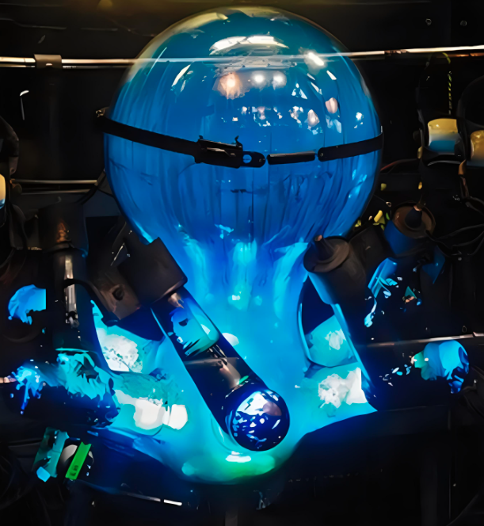
2.稳压
谈到稳压，大部分人第一时间联想到的可能是初中物理学过的分压方案，比如有一个10V的直流电压源，想得到一个5V的电压，可以使用下面的方法实现：
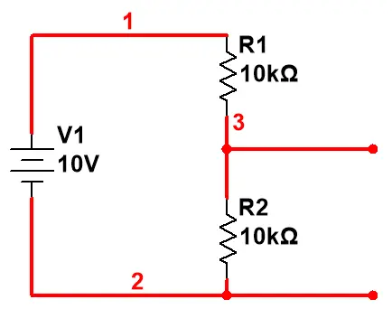这个方法有个问题，那就是太理想化了。我们为什么要分出5V的电压呢？总不可能只是拿来测着玩的吧，大概率还是要作为一个新的电压源给其他用电器提供能量的。而只要是用电器，总归是有电阻的，假设用电器的电阻为10kΩ，我们把它接入这个电路看看会发生什么：
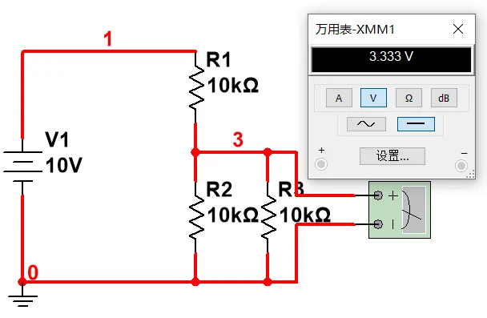用电器的等效电阻和分压电阻产生了并联，导致用电器分得的电压由原来的5V降为了3.3V，如果用电器的额定电压是5V，那么它将因为输入电压过低而无法正常工作。
如何解决这个问题呢？
一个解决思路是将电阻和多个二极管正向串联以获得目标电压：
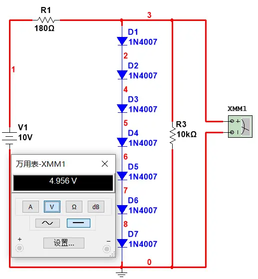
可这又会引发另外的问题：首先这种方法需要很多二极管，大量的二极管占据不小的体积，不利于设备的小型化；其次二极管是半导体器件，对温度比较敏感，不同温度下的输出电压可能差别较大；最后用电器的阻抗高的话，大部分的电流会从二极管流过，无法满足额定功率的要求。
有没有能解决上述大部分问题的简单方案呢？
有，那就是使用稳压二极管进行稳压，不过需要注意的是，稳压二极管是反向使用的，并且一般需要搭配电阻使用：
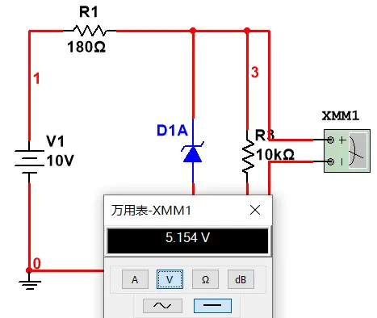
在对电源稳定性要求不高的场合，使用稳压二极管是不错的选择，但仅限于小功率的场景，要带动大功率的用电器，还是得上线性稳压或开关电源，此外稳压二极管也属于半导体，温度漂移也是不可避免的。
3.防浪涌
初中物理我们也都学过摩擦起电的内容，冬天几乎每个人都在进行这场实验：干燥的冬天，随着人们的运动，衣物间不可避免地发生摩擦，进而导致电荷的积累。电荷越来越多，当人体接触到金属物体时，大量的电荷在瞬间释放，瞬时电压可达上万伏，但这只是低功率放电，电压高电流低，所以不会对人造成什么实质性的伤害（类似的有打火机上的电击器和特斯拉线圈）。但这种瞬间的高压对电子产品来说却是致命的，一次放电就可以导致没有保护措施的电子产品永久性损坏，正因如此，流水线上的工人在组装产品时被要求带上接地的静电手环。
为了保护脆弱的电子设备，现代电子产品的电路里一般都包含防浪涌的部分，TVS管（瞬态电压抑制二极管）能很好地完成这个任务：
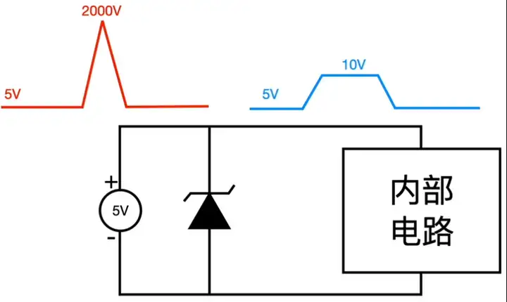
PS：和TVS管功能比较相似的是压敏电阻，这个一般是用来防雷击的（压敏指的是对高压敏感哦）。
4.发光
这应该是二极管最广泛的用途之一了。LED（发光二极管）作为最新一代的照明灯具，在效率、体积、显色指数这些指标上吊打传统灯具，从路边五颜六色的广告牌，到灯火通明的办公楼，随处可见它的身影，甚至在显示技术陷入瓶颈的现在，人们又重新打起了它的主意，将LED小型化后塞进显示器里（mini LED和micro LED）。驱动LED的电源有好几种，有恒流的、恒压的、恒功率的……，好了，不扯远了，让我们直接进入正题。
LED的发光原理先按下不表，先聊聊使用时的注意事项。驱动LED发光时，一般都需要串联电阻进行限流，将电流限制在规定的最大电流以下并留够足够的裕量（LED的导通电压一般比普通二极管高，不同颜色的LED导通电压不一样，基本都在几伏左右）：
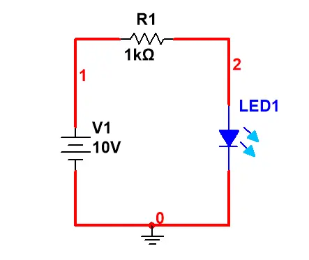注意，请不要直接将电源和LED连接，或者串联很小的电阻！否则，你将看到：LED在很短的时间内变得超亮，然后……开始冒烟。
另外，一位数码管内部其实就是八个LED，将这些LED的正极或负极连在一起（称为共阳或共阴），每个LED的负极或正极引出来外接，再盖上盖子限制光的形状，便可以由单片机点亮特定的LED以显示数字0-9及小数点：
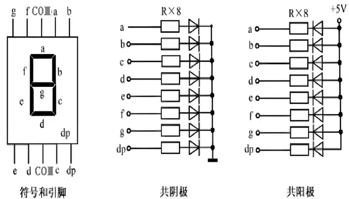最后，你们可以猜猜三原色中哪种颜色的LED最晚被发明？
答案是蓝色，研发出蓝色LED的三个人因此获得了当年的诺贝尔物理学奖（蓝色象征着和平与希望，但蓝色LED最后才出现，我觉得挺耐人寻味的）。
PS：大学毕业后第一份工作就是在一家电气公司做LED的开关电源，我仍然记得当时用的拓扑结构是反激，往事不堪回首……
注：以下钳位的截图和内容大部分总结自B站UP主爱上半导体、小鱼教你模数电和流忆斜阳的视频，这些内容仅用于科普，若构成侵权本人将第一时间进行删改
5.钳位
聊二极管不谈它的钳位功能的话总觉得差点意思。二极管的钳位我总结为了三大场景：
场景一
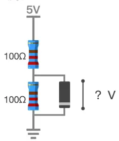
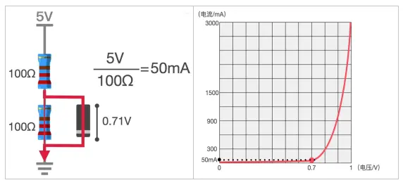
场景二
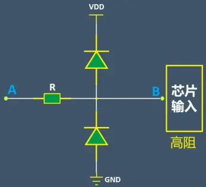
场景三
二极管和电容配合使用可以实现将交流电波形上下平移的效果，但有个重要前提：电路的RC常数至少是输入信号周期的10倍及以上。
PS：场景三的截图全部来源于B站UP主——流忆斜阳。
首先介绍正钳位电路：
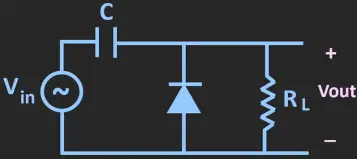理想效果： 解释：首先需要说明的是，上述的波形变化不是瞬间完成的，过渡阶段的波形和最终稳定的输出波形会有较大的差异。为了便于分析，我们将输入波形拆分为正半周和负半周。先看正半周，正半周波形输入电路时，对于二极管来说是反向的，故可将二极管部分看作是开路。此时电容会进行充电，但因为RC常数较大，电容充电很慢，绝大多数的输入电压由电阻承担，故这段时间电阻两端的输出波形和输入信号近似（黄线是过渡阶段的输出波形）：
解释：首先需要说明的是，上述的波形变化不是瞬间完成的，过渡阶段的波形和最终稳定的输出波形会有较大的差异。为了便于分析，我们将输入波形拆分为正半周和负半周。先看正半周，正半周波形输入电路时，对于二极管来说是反向的，故可将二极管部分看作是开路。此时电容会进行充电，但因为RC常数较大，电容充电很慢，绝大多数的输入电压由电阻承担，故这段时间电阻两端的输出波形和输入信号近似（黄线是过渡阶段的输出波形）： 接着来到负半周，此时二极管正向导通并将电阻短路，电容迅速充电至峰值，这段时间输出电压为0：
接着来到负半周，此时二极管正向导通并将电阻短路，电容迅速充电至峰值，这段时间输出电压为0： 这个时间点交流电的负峰值电压正好和充满电的电容两端的电压抵消了，之后电源输出的电压开始抬升，这意味着电源+电容的电压将开始变为正值，二极管又将可以看作断路。和之前不同的是，这次多了一个充到峰值电压的电容和电源一起对电阻放电，因为RC常数大，故电容的放电速度较慢，电容两端电压下降几乎可以忽略不计，可近似看作一个恒压源。此外正半周电容损失的电压会在负半周迅速补回来，输出波形进而变为下图这样：
这个时间点交流电的负峰值电压正好和充满电的电容两端的电压抵消了，之后电源输出的电压开始抬升，这意味着电源+电容的电压将开始变为正值，二极管又将可以看作断路。和之前不同的是，这次多了一个充到峰值电压的电容和电源一起对电阻放电，因为RC常数大，故电容的放电速度较慢，电容两端电压下降几乎可以忽略不计，可近似看作一个恒压源。此外正半周电容损失的电压会在负半周迅速补回来，输出波形进而变为下图这样： 该电路仿真结果如下图所示（现实中二极管会有压降，导致电容充电后的电压有所下降，输出波形略微向下偏移）：
该电路仿真结果如下图所示（现实中二极管会有压降，导致电容充电后的电压有所下降，输出波形略微向下偏移）： 其实这个电路能实现波形平移的核心就是利用二极管和电阻实现电容的快充电和慢放电，清楚这一点后理解其他此类电路就快很多了，在此还是简单介绍一下。
其实这个电路能实现波形平移的核心就是利用二极管和电阻实现电容的快充电和慢放电，清楚这一点后理解其他此类电路就快很多了，在此还是简单介绍一下。
负钳位电路： 二极管换了个方向，使得充满电的电容极性相反，原来向上移的波形向下移。
二极管换了个方向，使得充满电的电容极性相反，原来向上移的波形向下移。
带偏置的负钳位：
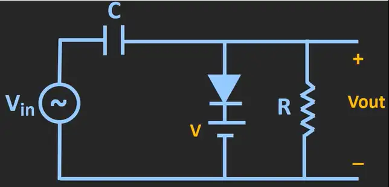理想效果：
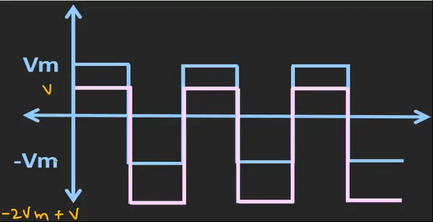给二极管串联一个恒压源，使电容充满电后的电压比原来低V伏特，这里的电容是负极性的，故波形比不加偏置的电路少下移V伏特，即上移V伏特。只要设置好偏置电压的值，便可让输入波形向下平移至想要的位置输出。
带偏置的正钳位：
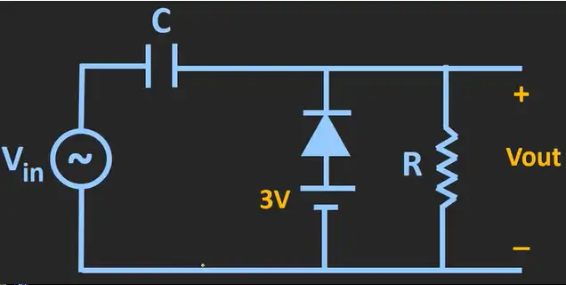理想效果：
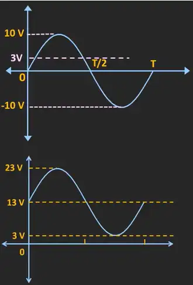给二极管串联一个恒压源，使电容充满电后的电压比原来高3V，这里的电容是正极性的，故波形比不加偏置的电路多上移3V。只要设置好偏置电压的值，便可让输入波形向上平移至想要的位置输出。
6.倍压
要将交流电转换为直流电，除了可以使用之前提到过的整流桥以外，还可以使用倍压电路。我们先从简单的二倍压开始讲起：
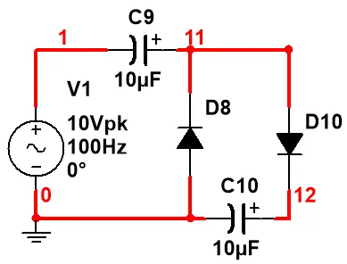
PS：有人可能会问为什么不从正半周开始分析，我的理解是刚开始D8把后面的电路给近似短路了，电流优先走阻碍比较少的路，后面的多倍压电路也是同理，如果有更好的解释请在评论区留言。
三倍压：
在二倍压电路的基础上加一个电容和一个二极管就构成了三倍压电路：
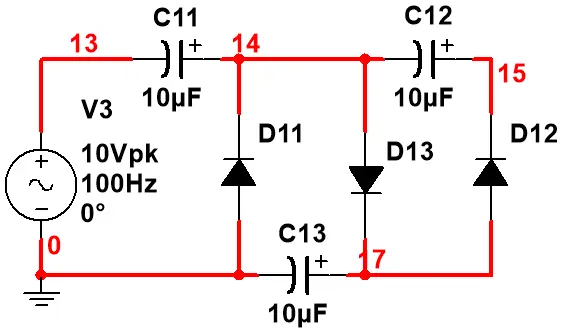
四倍压：
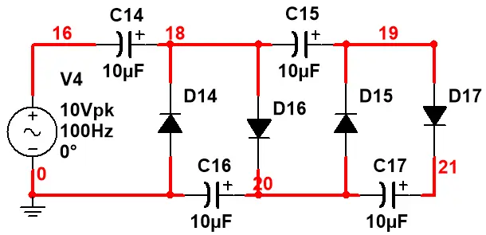
规律：几倍压就对应着几个电容二极管组合。
应用：因为电容的放电能力很弱，故这个电路的带载能力很差，适用于高电压低电流的场合，电蚊拍上用的比较多。
最后纠正几个对于倍压电路的常见误区：
1、认为随着倍压级数的增加，电容和二极管的耐压都要成倍增加。
实际上倍压电路提高电压的思路很像电池串联，从二倍压往后电容两端的电压最高只有两倍电源的峰值电压，二极管的正负极两端的电位也是随着级数增加同步上升的，根据叠加定理，每个二极管最高的反向电压也只有两倍电源的峰值电压。这也是我认为这个电路精妙的地方：用要求不高的元器件模块化叠加就能成倍提高电压。
2、认为必须要使用非极性电容。
我展示的电路用的都是极性电容，仿真也没什么问题，前面我提到过电流会优先走低阻碍的路，所以不用担心极性电容反接的问题。
二极管基础知识介绍的第一部分到这里就告一段段落了，本来是想一口气写完的，但考虑到文章太长能耐心看完的人不多（其实是懒+有任务），就拆分为两部分了，第二部分的大纲如下：
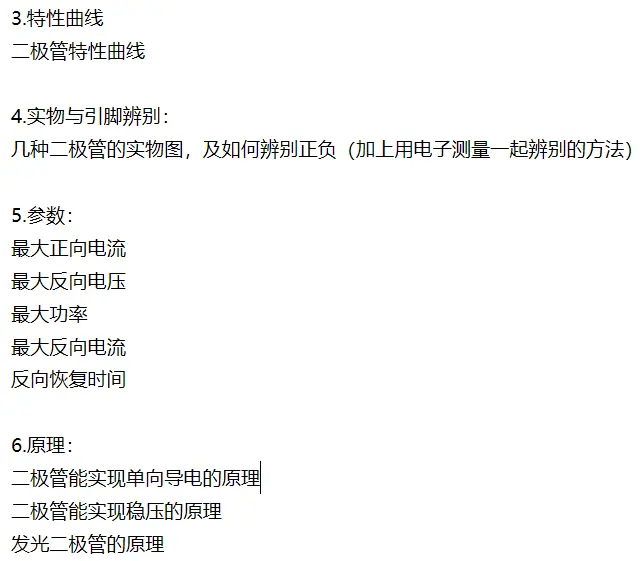把应用放在前面主要是怕先放原理可能会吓退一部分读者，后续还会更新“半导体三巨头”中的其他两位（三极管和场效应管），再之后会写一些交直流的互相转换，电压升高与降低的不同方法等等，不过接到了导师的任务，需要使用LVGL图形库在linux系统下进行图形界面的开发，控制IO口上的设备和高清摄像头拍照上传什么的，更新时间会很不确定（怎么感觉像在画饼）。